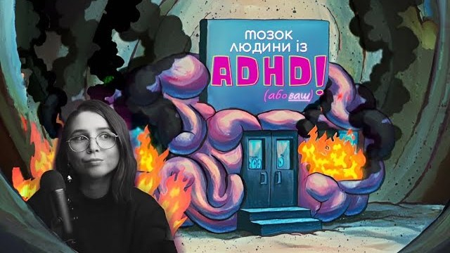
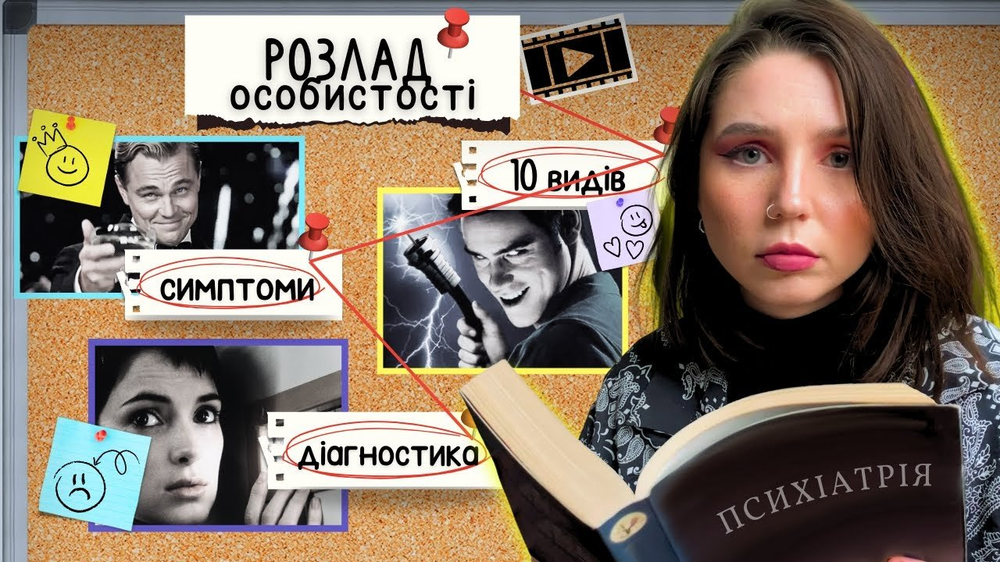

Motion for Explainers
12 explainers on psychology and science, in Ukrainian, made solo from research to publish. Roughly 20 motion graphics per episode.
The channel
12 videos across three years, written, animated, edited and published by one person. 853,715 impressions delivered, average click-through 4.5% against a platform benchmark of 2 to 3%, and average retention 40.7% against a benchmark of 23.7%.
What the work is
Popular science about psychology and the brain. Mental health and self-development through the lens of science. What matters to me is getting psychology and science across as accessibly as possible, through studies, diagrams and formulas.
Thumbnails


The pipeline
12 episodes alone turned into a fixed nine-stage run: research, script, asset planning, capture, edit and asset production, thumbnail, quality control, publish, review. One episode is documented stage by stage, with tools and outputs, in the production pipeline case study.
Credits
- Role
- Writer, Motion Designer, Editor (research, script, design, animation, grade, publish)
- Years
- 2023–2024
- Tools
- Final Cut Pro, DaVinci Resolve, Procreate, After Effects, Photoshop
- Channel
- Ada Vidrada
- Full pipeline
- Case study